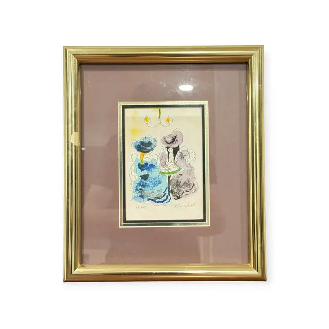
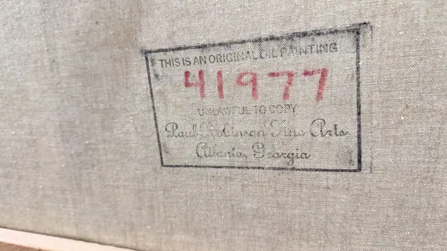
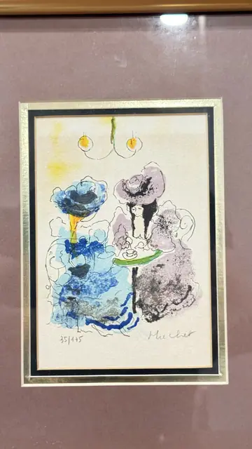
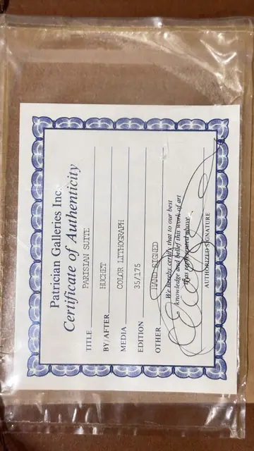

Paintings & Prints
Parisian Suite Lithograph by Huchet, Numbered Edition, Framed
Huchet · late 20th century
Price Upon Request




About the Item
HUCHET. A light, calligraphic colour lithograph in which two seated women, one in cobalt and cerulean blue and the other in soft lilac with a wide brimmed hat, lean together over a small green-topped table. Loose contour lines describe the chairs and skirts while the colour is applied in transparent washes and stippled granular passages that sit slightly off the drawing. A two-armed chandelier with yellow flames hangs above them against the bare cream sheet. The image is deckle-free and floated behind a black-lined mat over a dusty rose mount. Medium: colour lithograph on paper. Signed lower right of the sheet, in pencil, reading "Huchet". Edition: 35/175, hand signed. Accompanied by a certificate: Certificate of Authenticity for PARISIAN SUITE by/after HUCHET, colour lithograph, edition 35/175, hand signed, with an authorised signature. Inscribed on the reverse or mount: 35/175; Huchet; Patrician Galleries Inc.; Certificate of Authenticity. Condition: Sheet appears clean and bright; light diagonal reflections on the glass. No foxing or toning visible.
About the Artist
The lithographer signing Huchet is generally identified as Urbain Huchet (born 1930), a French printmaker of Paris street life, regattas and flower markets in a bright, breezy palette.
Details
- Creator:
- Huchet
- Creation Year:
- late 20th century
- Dimensions:
- Height: 13.9 in (35.31 cm)
Width: 11.6 in (29.46 cm)
outside of frame - Medium:
- colour lithograph on paper
- Edition:
- 35/175, hand signed
- Period:
- 20Th
- Condition:
- Offered in the condition shown in the photographs.
- Reference Number:
- VO-71
- Documentation:
- Certificate of Authenticity for PARISIAN SUITE by/after HUCHET, colour lithograph, edition 35/175, hand signed, with an authorised signature.
- Gallery Location:
- Patrician Galleries Inc.